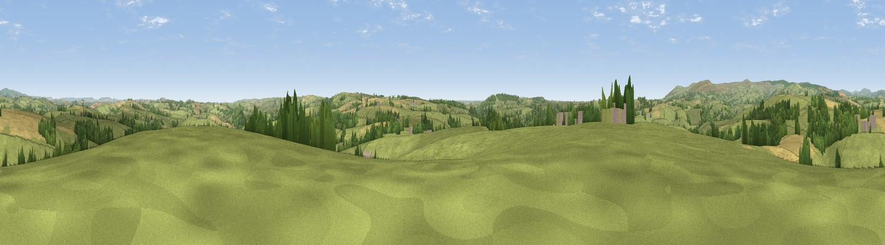

Stert Hill
#15064 in England · top 33% of its area beats it · near DiptfordWhere it is
The exact computed spot (SX 73944 56825). Click the marker for map links.
The view, rendered

A 360° render of this exact spot computed from the terrain model, tree cover and land cover — summer colours, afternoon light, calibrated against photographs of famous viewpoints. Real trees, hedges and buildings will differ in detail.
The panorama
Grey silhouette: terrain skyline in each direction (720 bearings, Earth curvature and refraction included). Dashed green: skyline with trees (+15 m) and buildings (+8 m) as obstacles. Blue strip: how far the ground is visible on each bearing.
Where the view opens
Wedge length = distance to the farthest visible ground on that bearing (vegetation-aware). Rings at 10, 25 and 50 km.
What fills the view
71% grassland · 17% cropland · 12% woodland
Angular shares of the visible panorama (visual magnitude), not map area. Landscape diversity 0.36 (0–1 Shannon).
Key numbers
More beautiful places nearby
The staircase of upgrades: each row has a higher view potential than everything closer. Driving times are estimates from straight-line distance, calibrated against real road routing — check an actual route before setting out.
| Place | Direction | Drive | Score |
|---|---|---|---|
| Viewpoint near Moreleigh | SE · 4 km | ~9 min | 74.0 |
| Brent Hill | NW · 6 km | ~13 min | 79.3 |
| Ugborough Beacon | WNW · 7 km | ~15 min | 79.5 |
| Western Beacon | W · 9 km | ~17 min | 81.9 |
| Beacon Hill | ENE · 13 km | ~24 min | 82.3 |
| Viewpoint near Kingswear | ESE · 18 km | ~31 min | 83.8 |
| Viewpoint near Hope | SSW · 19 km | ~32 min | 84.4 |
| Viewpoint near East Prawle | S · 21 km | ~35 min | 84.6 |
50.39775, -3.77494 · source: dobih hill · position refined by local search. Computed location — check access rights before visiting.